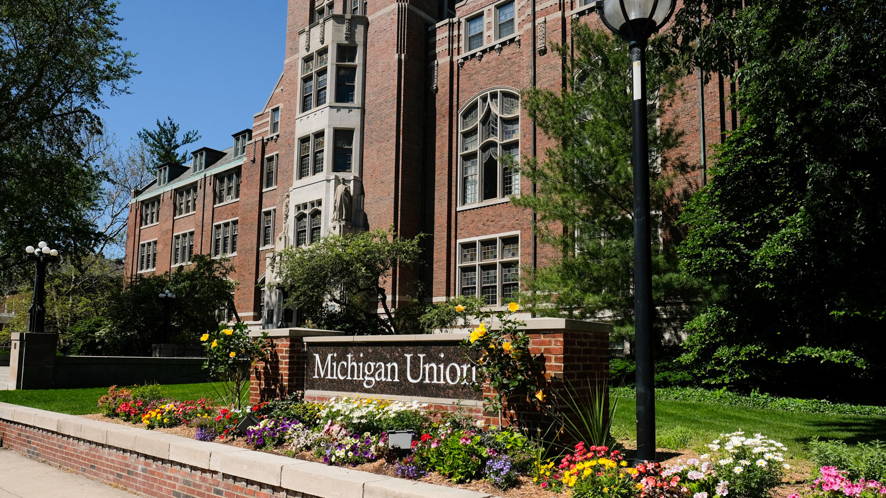

Who are we
Counseling and Psychological Services (CAPS) is an agency dedicated to fostering students' psychological development and emotional well-being. It provides counseling and psychotherapy, preventive and educational programs, consultation and outreach services, and contributes to the advancement of the mental health field.
Make an initial consultation
Schedule online
Make an appointment here.
Email us
Email our virtual front desk at caps-uofm@umich.edu
Please take note that, excluding holidays and breaks, email is only checked weekdays from 8 a.m. to 5 p.m.
Call us
734-764-8312
I need urgent support, what should I do?
Access urgent support resources here.
Where to find us
Location:

Address: Michigan Union
530 South State Street, Suite 4079
Ann Arbor, MI 48109
Additionally, CAPS has embedded staff located in different Schools and Colleges at U-M.
Phone: 734-764-8312 (24hrs)
Email: caps-uofm@umich.edu
Hours of Operation:
- Monday - Thursday: 8am-6pm
- Friday: 8am-5pm
- Saturday - Sunday: Closed
Note: CAPS phone hotline is available 24/7
If you need emergency assistance, please call 911 or go to your nearest emergency room.
Access other crisis service hotlines here.
FAQs
| Question | Answer |
|---|---|
| Who is eligible to for consulting? | Any currently enrolled U-M Ann Arbor students are eligible. |
| How much do services cost? | There are no fees for our services. |
| Is this confidential? | CAPS complies with state and federal regulations as well as all professional norms when it comes to securing your information. See our Confidentiality Information for more details. |
| Will my sessions be noted in my official student record? | No, definitely not. |
| How long will each appointment be? | Each consultation is scheduled for 45 minutes. |